Vislumbre a vida em imagens nítidas: sua jornada gestacional revelada com perfeição !
Em nosso universo de ultrassonografia dedicado às futuras mamães, cada imagem é uma narrativa de amor e expectativas. Desvendamos o extraordinário, transformando momentos mágicos em detalhes visíveis. Descubra a beleza da sua jornada gestacional, onde a tecnologia se une à emoção, criando memórias que durarão para sempre."